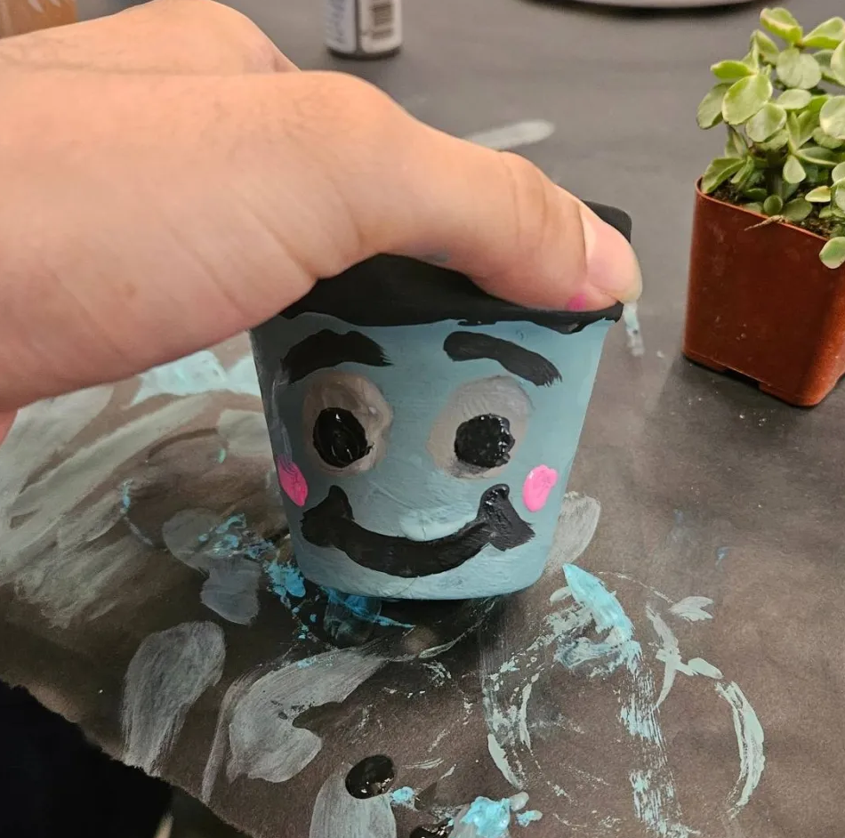

Portfolio of Tyler

About Me
I'm currently looking into game development and also like working on random obscure projects when my interests randomly hyperfocus on something. This is a portfolio of my work tackling procedural generation. Instead of a picture of me, have a picture of this pot I painted! I'm interested in procedural generation because of my love of roguelikes (taking inspiration from Binding of Isaac; Slay the Spire; FTL: Faster Than Light, etc).